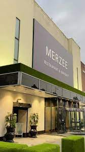
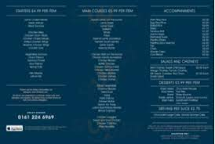

For many years, Merzee Restaurant has been a renowned dining destination that offers customers amazing eating experiences. Situated in a busy location, it is well-liked by both locals and visitors due to its tasty and unique cuisine that suit a wide range of palates. An overview of the restaurant, its food, atmosphere, and the factors that contributed to its success will all be covered in this essay. Delicious Culinary Experience: With a broad menu that suits a range of tastes and preferences, Merzee Restaurant provides a delicious culinary experience. The eatery is renowned for its outstanding meals, which are painstakingly prepared with premium ingredients and cutting-edge culinary methods. The Merzee Restaurant offers something for everyone, no matter your preference for tried-and-true dishes or for more daring tastes. Ambiance & environment: The restaurant is the perfect place for a wonderful dining experience because of its warm ambience and pleasant environment. The carefully chosen interior decor creates a warm and sophisticated setting that is ideal for special occasions, get-togethers with friends, and romantic feasts. Merzee Restaurant has gained a favourable reputation from both critics and foodies. It has won praise for its attention to detail, passion for creating a memorable dining experience, and commitment to culinary quality. The restaurant has received high marks from many customers for consistently providing excellent food and service.
Fresh, local, and sustainable ingredients are used to create a wide range of meals on the Merzee Restaurant's varied and constantly-evolving menu. The menu is broken down into a number of sections, such as salads and soups, entrees, desserts, and appetisers. The delicious chocolate lava cake, pan-seared scallops, and grilled fish with lemon herb butter are a few of Merzee Restaurant's well-liked items. In addition, the restaurant provides a large assortment of wines, beers, and drinks that go well with the flavours of its food. Appetisers from Merzee: Bruschetta: This traditional Italian dish, made with fresh tomatoes, garlic, basil, and olive oil, is a great way to begin a meal. Calamari - Merzee's calamari is a crispy, savoury delight that is sure to impress, and it is lightly battered and fried. packed Mushrooms: A flavorful and filling appetiser, these mushrooms are packed with a delicious mixture of cheese, breadcrumbs, and garlic.Merzee's appetisers: Seafood Paella: Merzee's dedication to using local, fresh products is evident in this meal, which is a tasty combination of rice, prawns, mussels, clams and fish.Lobster Ravioli: This meal is a seafood lover's paradise, stuffed with a decadent lobster cream sauce and served with a side of crisp veggies.Fillet Mignon: This perfectly cooked steak entrée, which is paired with seasonal veggies and garlic mashed potatoes, is sure to please any meat lover.Desserts: Tiramisu - a classic Italian dessert made with layers of lady fingers, mascarpone cheese and espresso. This dish is the perfect way to end a meal.Chocolate Lava Cake - A rich, decadent cake with a warm, gooey center. This dessert is sure to satisfy your sweet tooth.Creme Brulee - Merzee's timeless favorite Creme Brulee features the perfect balance of creamy custard and caramelized sugar.
Merzee Hotel Manchester is a well-established hotel located in the bustling city of Manchester, England. Thanks to its great location, cosy lodging, and abundance of amenities, it is a well-liked option for both leisure and business travellers. The hotel's handy location—just a short stroll from Manchester Piccadilly Station—makes it simple for visitors to go to the city's landmarks, retail establishments, and cultural venues. In addition, the hotel's proximity to well-known locations including the Bridgewater Hall, the Manchester Opera House, and the Arndale Centre offers visitors a wealth of entertainment alternatives.